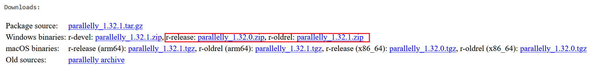
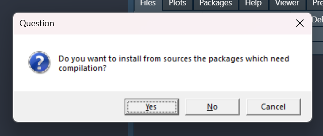
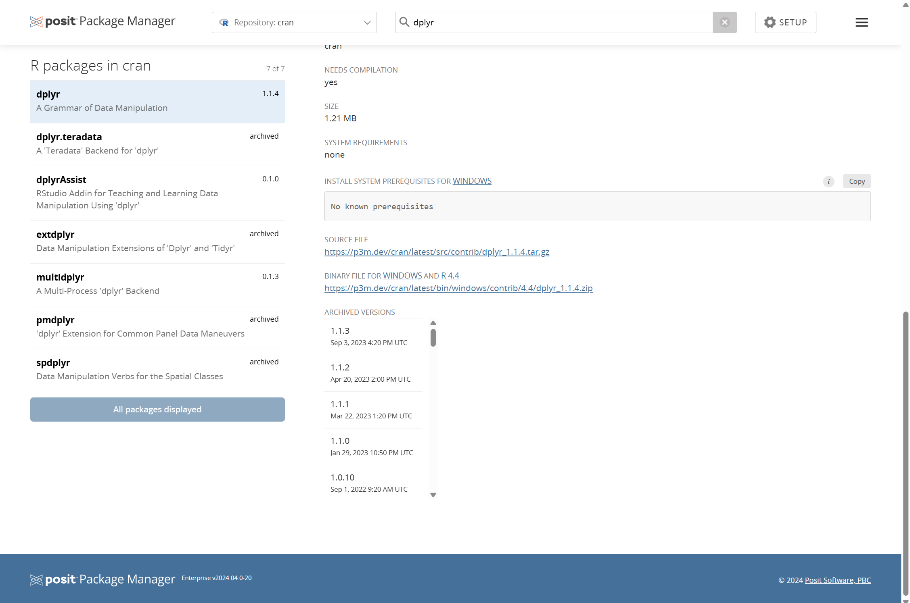
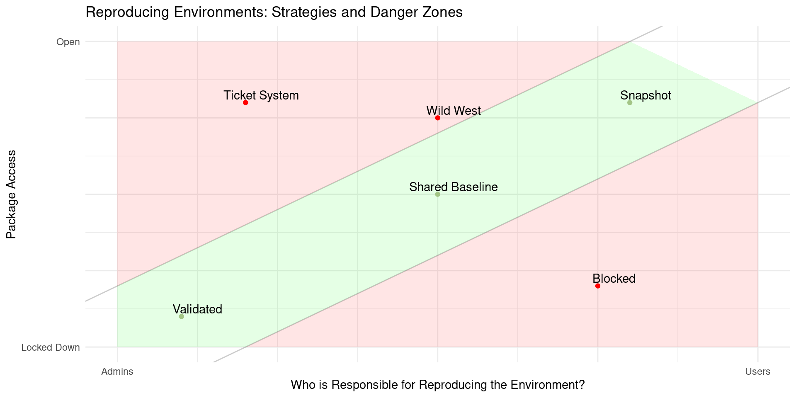
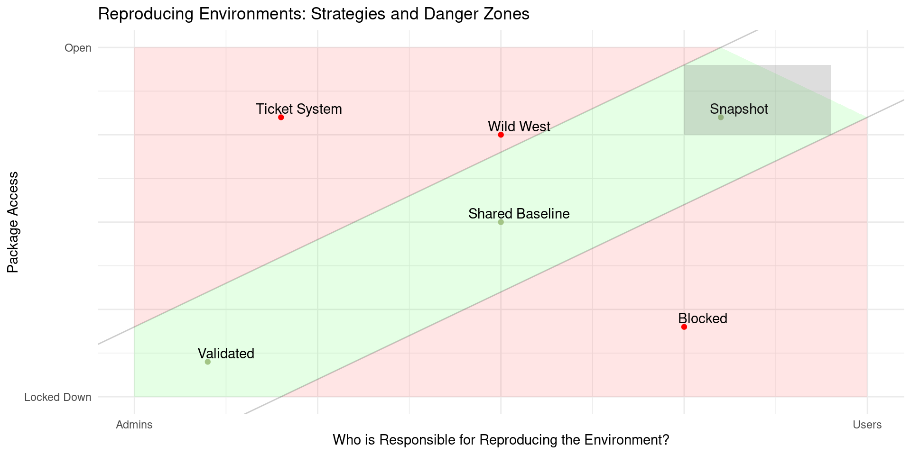
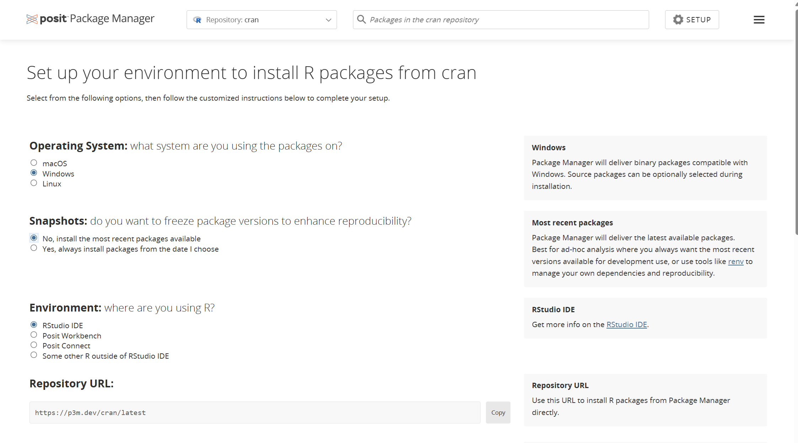
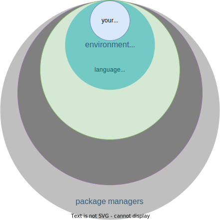
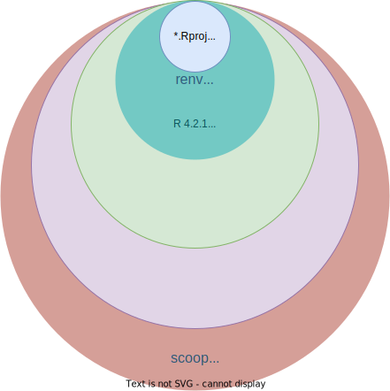
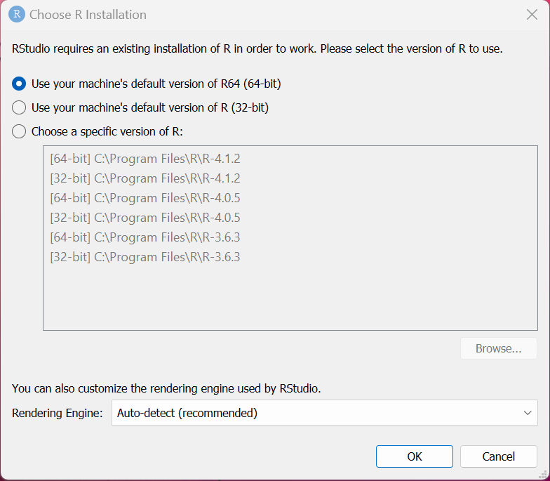
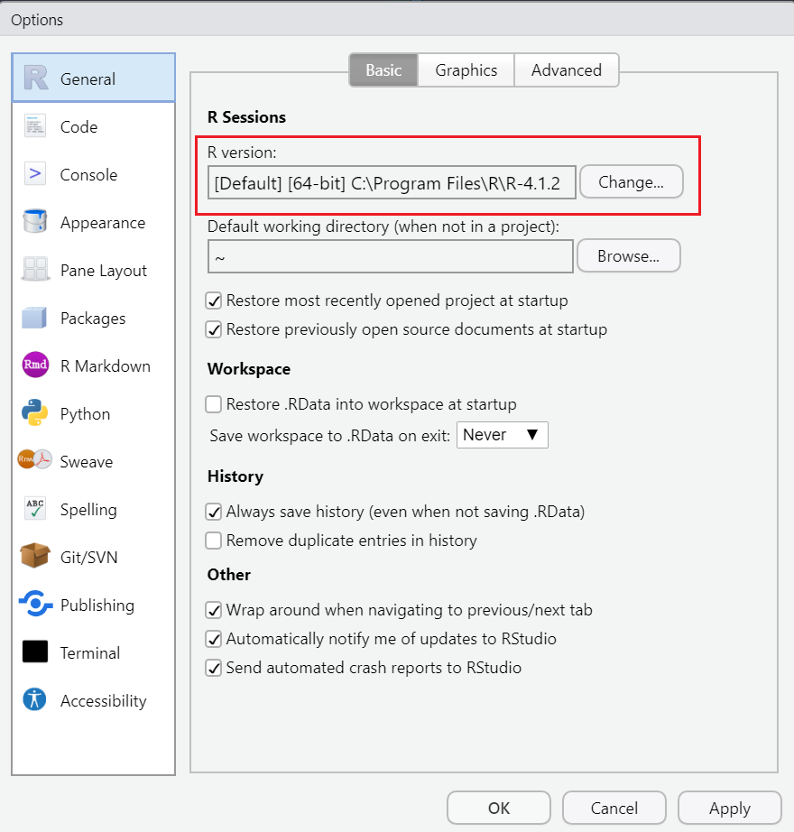

personal radmin
throw your computer into the ocean with confidence
E. David Aja
Course material
a brief personal history:
Auditor
- personal laptop
- RStudio in Citrix
- airgapped Posit Workbench
- airgapped Shiny Server Pro
- Special Issue Individual Laptop
- Special Issue Individual Desktop
- Special Issue Team Desktop
Data Scientist
- personal laptop
- work laptop
- RStudio in Citrix
- RStudio Server
Solutions Engineer
- personal laptop
- work laptop
- Posit Workbench Demo Server
- Posit Workbench Internal Server
- misc ephemeral environments
How do I…
- upgrade the version of R I’m using for this project?
- track which package versions I’m using for this project?
- move this project from one machine to another?
warmup
warmup
starting R
installing R packages
creating reproducible environments
installing / upgrading R
📦 library
R packages
- the natural unit for distributing R code
base R
- 14 base + 15 recommended packages
- ships with all binary distributions of R
For example, have you used lattice recently? 🤷
- it came with your R installation, can use out of the box
library(lattice)
Where do packages live locally?
By default, in the default library
.Library
All libraries for the current session
.libPaths()
All installed packages
installed.packages()
explore your package library
usethis::use_course("rstats-wtf/wtf-explore-libraries")
# use_course("rstats-wtf/wtf-explore-libraries", destdir = "my/new/location")07:30
starting R
warmup
starting R
installing R packages
creating reproducible environments
installing / upgrading R
why?
Sometimes we want to change the way our code behaves without having to change the code.
R startup sequence

R startup sequence (our focus)

⚠️ Use a newline
startup files must end in a newline.
R may silently throw away the last line if you don’t do this.

.Renviron
environment variables
a […] named value that can affect the way running processes will behave on a computer
what goes in .Renviron
✅ R-specific environment variables
✅ API keys or other secrets
❌ R code
Editing .Renviron
usethis::edit_r_environ(scope = ?)
user
~/.Renviron
project
path/to/your/project/.Renviron
example .Renviron
read environment variables
Sys.getenv()
edit your user .Renviron
usethis::edit_r_environ()- add
WTF_USER=<your name>_user - restart your R session
CTRL + SHIFT + F10
CMD + SHIFT + 0 - Retrieve the value of WTF_USER
Sys.getenv("WTF_USER")
02:00
edit your project .Renviron
usethis::edit_r_environ("project")- add
WTF_PROJECT=<your name>_project - restart your R session
CTRL + SHIFT + F10
CMD + SHIFT + 0 - Retrieve the value of WTF_PROJECT
Sys.getenv("WTF_PROJECT")
02:00
what’s the value of WTF_USER after you set WTF_PROJECT?
.Renviron recap
project .Renviron “short-circuits” if it exists, your user .Renviron will not be evaluated
.Rprofile
R code that runs at the start of each session
?interactive()
TRUE
🧑💻
- sending individual lines of code to the console
☝️ most .Rprofile customization
FALSE
🤖
- knitting an RMarkdown document
R -e script.R
what to put in .Rprofile
- set a default CRAN mirror
- customize R prompt
what not to put in .Rprofile
If it matters for code you share, it should not be in .Rprofile
why shouldn’t these go in .Rprofile?
options(stringsAsFactors = FALSE)library(tidyverse)f <- dplyr::filtertheme_set(theme_bw())
discuss with your neighbor
Why might these be safe to put in .Rprofile?
02:00
dotfiles
https://github.com/search?q=.Rprofile
activity
usethis::edit_r_profile()- add
print("from my user Rprofile") - restart your R session
CTRL + SHIFT + F10
CMD + SHIFT + 0 - what value is printed when you restart?
usethis::edit_r_profile("project")- add
print("from my project Rprofile") - restart your R session
CTRL + SHIFT + F10
CMD + SHIFT + 0 - what value is printed when you restart?
05:00
.Rprofile recap
project .Rprofile “short-circuits”
if it exists, your user .Rprofile will not be evaluated
wrapping up
.Renviron
- secrets
- environment information
.Rprofile
- development dependencies
installing R packages
warmup
starting R
installing R packages
creating reproducible environments
installing / upgrading R
why

states of R packages
states of R packages
Binary
- compiled ahead of time
- easiest / fastest to install
where to get binaries
| CRAN | Posit Public Package Manager (p3m) | |
|---|---|---|
| windows | ✅ | ✅ |
| mac OS | ✅ | ✅ |
| linux | ❌ | ✅ |
are binaries available?
CRAN

may not be the latest
may not be the latest
may not be the latest
> install.packages("parallelly", repos = "https://cran.rstudio.com")
Installing package into ‘C:/Users/WDAGUtilityAccount/Documents/R/win-library/4.0’
(as ‘lib’ is unspecified)
There is a binary version available but the source version is later:
binary source needs_compilation
parallelly 1.31.0 1.32.1 FALSE
installing the source package ‘parallelly’
trying URL 'https://cran.rstudio.com/src/contrib/parallelly_1.32.1.tar.gz'
Content type 'application/x-gzip' length 124853 bytes (121 KB)
downloaded 121 KB
* installing *source* package 'parallelly' ...
** package 'parallelly' successfully unpacked and MD5 sums checked
** using staged installation
** R
** inst
** byte-compile and prepare package for lazy loading
** help
*** installing help indices
converting help for package 'parallelly'
finding HTML links ... done
as.cluster html
autoStopCluster html
availableConnections html
availableCores html
availableWorkers html
canPortBeUsed html
cpuLoad html
find_rshcmd html
freeCores html
freePort html
getOption2 html
isConnectionValid html
isForkedChild html
isForkedNode html
isLocalhostNode html
isNodeAlive html
makeClusterMPI html
makeClusterPSOCK html
parallelly.options html
pid_exists html
supportsMulticore html
*** copying figures
** building package indices
** testing if installed package can be loaded from temporary location
*** arch - i386
*** arch - x64
** testing if installed package can be loaded from final location
*** arch - i386
*** arch - x64
** testing if installed package keeps a record of temporary installation path
* DONE (parallelly)Posit Package Manager
PPM

how do I know I got a binary?
> install.packages("parallelly", repos = "https://cran.rstudio.com")
Installing package into ‘C:/Users/edavi/Documents/R/win-library/4.1’
(as ‘lib’ is unspecified)
trying URL 'https://cran.rstudio.com/bin/windows/contrib/4.1/parallelly_1.32.1.zip'
Content type 'application/zip' length 306137 bytes (298 KB)
downloaded 298 KB
package ‘parallelly’ successfully unpacked and MD5 sums checked
The downloaded binary packages are in
C:\Users\edavi\AppData\Local\Temp\Rtmpa2s3e8\downloaded_packages> install.packages("renv", repos="https://cran.rstudio.com")
Installing package into ‘/Users/edavidaja/Library/R/x86_64/4.1/library’
(as ‘lib’ is unspecified)
trying URL 'https://cran.rstudio.com/bin/macosx/contrib/4.1/renv_0.15.5.tgz'
Content type 'application/x-gzip' length 1866760 bytes (1.8 MB)
==================================================
downloaded 1.8 MB
The downloaded binary packages are in
/var/folders/b5/fl4ff68d23s148tg1_1gnflc0000gn/T//RtmpMk69B0/downloaded_packages> install.packages("remotes")
Installing package into ‘C:/Users/WDAGUtilityAccount/AppData/Local/R/win-library/4.2’
(as ‘lib’ is unspecified)
trying URL 'https://packagemanager.rstudio.com/all/latest/bin/windows/contrib/4.2/remotes_2.4.2.zip'
Content type 'binary/octet-stream' length 399930 bytes (390 KB)
downloaded 390 KB
package ‘remotes’ successfully unpacked and MD5 sums checked
The downloaded binary packages are in
C:\Users\WDAGUtilityAccount\AppData\Local\Temp\RtmpA1edRi\downloaded_packagespop quiz, hotshot
Does Posit Package Manager serve a binary of dplyr for R 3.6?
02:00
Source
- compiled in your environment
- requires extra tools when package uses C, C++, Fortran, Rust, etc.
if you don’t have tools
Running `R CMD build`...
* checking for file 'C:\Users\WDAGUtilityAccount\AppData\Local\Temp\RtmpkTUH61\remotes192027624804\tidyverse-dplyr-36ef054/DESCRIPTION' ... OK
* preparing 'dplyr':
* checking DESCRIPTION meta-information ... OK
* cleaning src
* installing the package to process help pages
-----------------------------------
* installing *source* package 'dplyr' ...
** using staged installation
** libs
Warning in system(cmd) : 'make' not found
ERROR: compilation failed for package 'dplyr'
* removing 'C:/Users/WDAGUT~1/AppData/Local/Temp/Rtmp6hYuyV/Rinst1334d1a23d1/dplyr'
-----------------------------------
ERROR: package installation failedWarning in untar2(tarfile, files, list, exdir, restore_times) :
skipping pax global extended headers
* installing *source* package 'dplyr' ...
** using staged installation
** libs
c:/Rtools/mingw_64/bin/g++ -std=gnu++11 -I"C:/PROGRA~1/R/R-36~1.3/include" -DNDEBUG -O2 -Wall -mtune=core2 -c filter.cpp -o filter.o
sh: line 1: c:/Rtools/mingw_64/bin/g++: No such file or directory
make: *** [C:/PROGRA~1/R/R-36~1.3/etc/x64/Makeconf:215: filter.o] Error 127
ERROR: compilation failed for package 'dplyr'
* removing 'C:/Users/edavi/DOCUME~1/projects/WTF-PR~1/renv/staging/1/dplyr'
Error: install of package 'dplyr' failedhow to get the tools
got tools?
devtools::has_devel()
## Your system is ready to build packages!
activity
install a package from r-universe
open the
personal-radminprojectinstall.packages("gitcellar")# not on cran!update your project
.Rprofile:
usethis::edit_r_profile(scope = "project")save
.Rprofileand restart Rinstall.packages("gitcellar")
05:00
discussion
- did you install
gitcellarfrom binary or source?- How do you know?
wrapping up
binaries are usually preferred, but for development versions of packages, you may need to install from source.
creating reproducible environments
warmup
starting R
installing R packages
creating reproducible environments
installing / upgrading R
why?
The quick and dirty approach you took then comes right back at you as a boomerang.
Therefore, ban the concept of one-off altogether. No matter what the asker says, it will have to be done again, always!
3/9— Edwin Thoen (@edwin_thoen) May 16, 2022
reproducibility strategies
reproducibility strategies
tools
ppm
renv

ppm
ppm: latest
ppm: date-based snapshots

activity
time travel!
open the
personal-radminprojectupdate your project
.Rprofilewith a date-based snapshot of CRANRestart R
install.packages("dplyr")
what version of dplyr did you install?
05:00
renv
shared project environment
.libPaths()
isolated project environments
.libPaths()
isolated project environments
- experiment with new packages without breaking other projects
- share exactly which versions you’re using with your team or future you
- re-use packages you’ve already installed
activity
create an isolated project library
- open your
wtf-fix-pathsproject install.packages("renv")renv::init()renv::status()- add
library(parallelly)to any file in thewtf-fix-paths/Rdirectory; save file renv::status()install.packages("parallelly")renv::status()renv::snapshot()(yproceed)- remove
library(parallelly)from the file you added it to; save file renv::status()
10:00
renv::install()
or install.packages() with shims enabled
renv::install("jsonlite")
renv::install("jsonlite@1.2") # at version
renv::install("jeroen/jsonlite") # latest
renv::install"jeroen/jsonlite@80854359976250f30a86a6992c0d8c3b3d95473d") # at SHA
renv::install("path/to/package") # local sourcethe junk drawer
for reprexes, tweets, and other ephemera:
~/Documents/scratch
installing / upgrading R
warmup
starting R
installing R packages
creating reproducible environments
installing / upgrading R
why

why

bigger context

practice makes perfect
“run this command” >> clickOps

package managers
software whose job it is to install other software
🙉 not the same kinds of packages as PPM
| package manager | |
|---|---|
| windows | scoop, chocolatey, winget |
| macOS | homebrew |
| linux | homebrew, apt, yum, zypper |
⚠️
Avoid installing your language with a package manager
language managers
using your package manager, install rig:
language managers for other languages:
switching R versions
CTRL + CLICK

switching R versions

language versions
using rig, install a version of R:
❯ rig install --help
rig-add
DESCRIPTION:
Download and install an R version, from the official sources.
It keeps the already installed R versions, except versions within the
same minor branch, see below.
EXAMPLES:
# Add the latest release
rig add release
# Install specific version
rig add 4.1.2
# Install latest version within a minor branch
rig add 4.1environment managers
using your desired version of the language, install an environment manager:
install.packages("renv")
project
using your environment manager, install your project’s dependencies:
create a new environment
restore an already defined environment
activity
read the rig FAQ, or the rswitch guide
- install
rig - use rig to install a different major or minor version of R
⚠️ avoid installing a patch version
- open RStudio with that newly installed R version
10:00